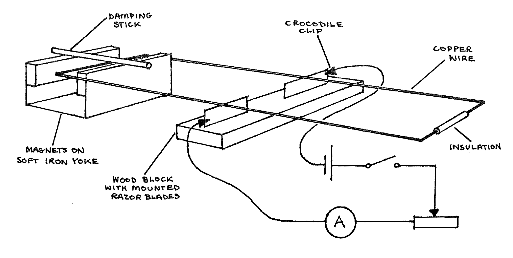
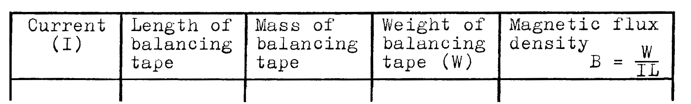

F5-1: Measuring the Magnetic Flux Density of a Permanent Magnet Using a Current Balance¶
Apparatus¶
Magnets mounted on a soft iron core; rectangular copper wire coil; mounted razor blades; plastic dampening stick; 5 connecting wires; 1.5V dry cell; key switch; 15\(\Omega\) rheostat; ammeter with 0 to 0.3mA scale; metre stick; callipers; triple beam balance; 5m of ticker tape; about 0.4m piece of extra ticker tape; tweezers; scissors.

Procedure¶
- Set up the apparatus as shown above. Be certain the wire coil is level with the smooth end of the coil in the exact center of the magnetic field.
- Measure and record the horizontal length of the magnets. Neglecting edge effects, this is the length of the magnetic field the current passes through.
- Measure and record the mass of 5m of ticker tape. Use this to determine the linear density \(\mu\) of the tape.
- Place the key in the switch and allow 0.05mA of current to pass through the circuit by adjusting the rheostat. The end of the coil between the magnets should deflect down. If the end of the coil between the magnet deflects up, reverse the direction of the dry cell in the circuit to make the end of the coil between the magnets deflect down. From the short extra piece of ticker tape, cut lengths of tape 0 to 4cm long, fold them in half, and using the tweezers place them on the end of the coil opposite the magnets. Add or remove tape until the coil is again level.
- When the weight of the tape pieces balances the force on the current carrying end of the wire, switch the current off and remove the pieces of tape. Measure the lenth of this tape and using \(\mu\), determine the weight of the pieces of tape.
- Repeat steps 4 and 5 above for currents 0.10, 0.15, 0.20, 0.25, and 0.30mA. Calculate your results.
Observations¶
Tabulate:

Theory¶
For a current flowing perpendicular to a magnetic field, the force exerted on the current carrier is \(F = B I L\) where \(F\) is in newtons, \(B\) is in tesla, \(I\) is in amperes, and \(L\) is the length in metres of the wire in the magnetic field.
In this experiment, the coil experiences a torque due to the force on the end of the wire which runs through the magnetic field. \(\tau = F R\) where \(R\) is the distance from the end of the coil to the pivot on the razor blades. The coil is uniform and the distance, \(R\) to each end is the same.
When the coil is level, the weight of the tape on one end is equal to the force of the magnetic field on the current at the other end of the coil. The magnetic flux density is found from: \(B = \frac{F}{I L} = \frac{W}{I L}\).
Analysis¶
Use your measurements to find the magnetic flux density of the magnet for each value of \(I\) and then find an average value for \(B\).
Explain why the end of the coil in the magnetic field is deflected down when the current is increased.
Use your text or research the topic “torque on a current loop” online as a reference for your answer.